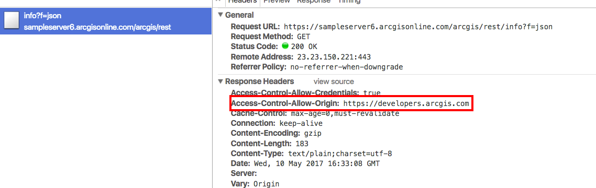

CORS (Cross Origin Resource Sharing)
The ArcGIS API for JavaScript supports CORS. CORS allows web applications to bypass a browser's same origin policy and access resources or services on other servers/domains.
When both the web server and the browser support CORS, a proxy is not required to do cross-domain requests. This is helpful as it can:
- Provide a performance boost since the web application no longer has to send a request back to its server, wait for the server to access the desired resource, and interpret the result before sending it back to the client.
- Simplify development as it is no longer necessary to maintain a proxy page on your server.
This topic specifically discusses CORS, additional information on working with proxies can be found in the proxies guide topic.
Web servers must be pre-configured for CORS support while browsers must be able to support it. For additional details on enabling this in a web server, please visit enable-cors.org. All modern browsers support CORS.
The ArcGIS API for JavaScript and CORS
The ArcGIS API for JavaScript has automatic detection for CORS support. When loading services, it sends a XHR request to the /rest/info endpoint of any service that is used in an API application.

The screen capture above shows the /rest/info endpoint and the response headers it returns. Take note of the Access-Control-Allow-Origin header. This specifies that the server is enabled for CORS and a standard XMLHttpRequest is able to access the response as if it was on the same domain.
The following use cases explain how to work with or without CORS support in an ArcGIS API for JavaScript web application.
Example: server without CORS support
In the screen capture below, a request is being made to https://sampleserver1.arcgisonline.com/arcgis/rest/info?=json.

Sampleserver1 is not enabled for CORS, therefore this request fails and an error is logged to the browser's developer console indicating that a cross domain request cannot be granted.
XMLHttpRequest cannot load {REQUESTED-URL}. No 'Access-Control-Allow-Origin' header on the requested resource. Origin '<APP-DOMAIN>' is therefore not allowed access.
Sampleserver1 is a version 10.01 ArcGIS Server service. Prior to version 10.1, ArcGIS Server services were not enabled for CORS. This warning should not display for those services running at later versions and can be safely ignored when shown on services running at earlier versions.
Even though CORS is not enabled on sampleserver1.arcgisonline.com/rest/services, layers from this server are still able to display. You may be asking yourself, "how can the application still access the layer even though it is not enabled for cross domain access?"
This is because the request was made via HTTP GET and the response is in JSONP (JSON with padding) format. This is a JSON response wrapped around a callback function that is specified in the URL. For example, using the callback,
https://sampleserver1.arcgisonline.com/ArcGIS/rest/services/Demographics/ESRI_Population_World/MapServer?f=json&dpi=96&transparent=true&format=jpeg&callback=dojo.io.script.jsonp_dojoIoScript1._jsonpCallback
notice the response displays similar to the snippet below,
dojo.io.script.jsonp_dojoIoScript1._jsonpCallback({
"currentVersion": 10.01,
"serviceDescription": "This service contains population density polygons, country boundaries, and city locations for the world. The map is color coded based on the number of persons per square mile (per every 1.609 kilometers square). Population data sources included national population censuses, the United Nations demographic yearbooks, and others. In general, data currency ranged from 1981 to 1994. This is a sample service hosted by ESRI, powered by ArcGIS Server. ESRI has provided this example so that you may practice using ArcGIS APIs for JavaScript, Flex, and Silverlight. ESRI reserves the right to change or remove this service at any time and without notice.",
"mapName": "Layers",
"description": "This service contains population density polygons, country boundaries, and city locations for the world. The map is color coded based on the number of persons per square mile (per every 1.609 kilometers square). Population data sources included national population censuses, the United Nations demographic yearbooks, and others. In general, data currency ranged from 1981 to 1994.\n",
"copyrightText": "(c) ESRI and its data partners",
"layers": [{
"id": 0,
"name": "CEISEN Population",
"parentLayerId": -1,
"defaultVisibility": true,
"subLayerIds": null,
"minScale": 0,
"maxScale": 0
}],
"tables": [],
"spatialReference": {
"wkid": 4326
},
"singleFusedMapCache": false,
"initialExtent": {
"xmin": -781.528595186209,
"ymin": -399.851519127974,
"xmax": 778.578125335329,
"ymax": 423.455277935017,
"spatialReference": {
"wkid": 4326
}
},
"fullExtent": {
"xmin": -180,
"ymin": -90,
"xmax": 180,
"ymax": 90,
"spatialReference": {
"wkid": 4326
}
},
"units": "esriDecimalDegrees",
"supportedImageFormatTypes": "PNG24,PNG,JPG,DIB,TIFF,EMF,PS,PDF,GIF,SVG,SVGZ,AI,BMP",
"documentInfo": {
"Title": "GlobalPopulation",
"Author": "serverxadmin",
"Comments": "",
"Subject": "",
"Category": "",
"Keywords": "",
"Credits": ""
},
"capabilities": "Map,Query,Data"
});
In order to use this approach, the API needs to request a HTTP GET endpoint and return JavaScript code instead of standard JSON data. The application creates and inserts <script> tags into the web page containing JSON data with a function call wrapped around it. It is set in the tag's src attribute. This bypasses the cross domain security concerns and allows access to the service.
Since the error is harmless, one way to surpress it is to set esriConfig.request's corsDection property to false.
Example: API does not send a request to the /rest/info endpoint
There are a few instances when the API does not send a request to the /rest/info endpoint. These include:
- The API contains a list of server names that support CORS. If the server is already listed in this esriConfig.request's
corsEnabledServersproperty, requests to those server/rest/infoendpoints are not sent - esriConfig.request's
corsDectionproperty is set to false - If the browser does not support CORS (not common).
Example: CORS is supported
There may be cases where the server is enabled for CORS but the application accessing this resource is not aware of this. In this situation, you may come across a developer console error similar to what is shown below.
[esri.core.urlUtils] esri/config: esriConfig.request.proxyUrl is not set. If making a request to a CORS-enabled server, please push the domain into esriConfig.request.corsEnabledServers.
To get around this, add the root URL for CORS enabled servers to esri.config.defaults.io.corsEnabledServers, which is an array of strings.
// Add a known server to the list.
require(["esri/config"], function(esriConfig) {
esriConfig.request.corsEnabledServers.push("www.example.com");
});
This can be used for ArcGIS Server and third party services such as those used for Web Tile layers.
By default, the API automatically enables some servers by default. For example, server.arcgisonline.com is a corsEnabledServer that is automatically recognized as a CORS supported server. For a full listing of servers automatically enabled, please see the full list provided in the API reference for esri.config.defaults.io.corsEnabledServers.
The test-cors.org online tool is a helpful resource if unsure whether the server(s) you are accessing support CORS.
Other scenarios
The above use cases may not fit your exact scenario. For example, there may be instances where CORS is not enabled on the server and JSONP is not supported, or maybe the services are behind a firewall? If this is the case, a proxy page is needed. Please see the separate proxies guide topic that discusses the various use cases for this.
Helpful samples
The following samples show the use of pushing a server name into esri.config.defaults.io.corsEnabledServers.